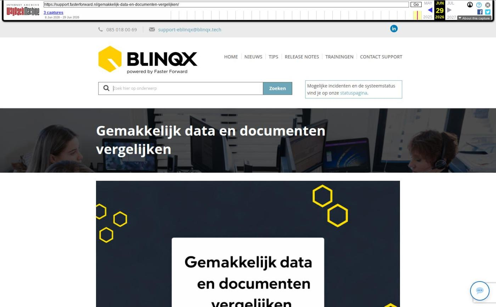

Gemakkelijk data en documenten vergelijken
- Data en documenten vergelijken
- Verbeteringen in stukkenlijst
- Nieuwe iconen en signalering
- Bevindingen weergeven en verbergen
- Wijzigingen kolommen
- Arrangementen en kosten bankgarantie Nationale Waarborg automatisch opgehaald
- Overige verbeterpunten
- Gemakkelijk data en documenten vergelijken
Vanaf nu kan je gemakkelijk verschillende documenten met elkaar controleren en daarmee ook de klantgegevens in het dossier. In de stukkenlijst word je erop geattendeerd wanneer er verschillen zijn tussen de documenten en de gegevens in eBlinqx. Ook kan je zelf een vergelijking tussen documenten opstarten. Op deze manier krijg je zo snel mogelijk een zo compleet mogelijk dossier met relevante en actuele klantdata.
Data en documenten vergelijken
Vanuit de stukkenlijst kan je gemakkelijk, via het vergelijkingsicoon, de vergelijking starten.
In het vergelijkingsscherm wordt de data in eBlinqx altijd links getoond. Daarnaast staat het document van het stuk waarbij je de vergelijking hebt geopend. Via een dropdownmenu kan je nog een extra document ernaast zetten. Wanneer je meerdere documenten naast elkaar zet dan worden de gegevens zowel met de gegevens in eBlinqx als de documenten onderling met elkaar vergeleken. Als er tijdens de vergelijking verschillen zijn gevonden worden deze regels oranje uitgelicht.
Je kan aangeven of je het originele document wilt zien of de uitgelezen gegevens door middel van AI. Deze keuze maak je met de volgende knop:
Kies je voor de uitgelezen gegevens dan wordt uitgelicht welke gegevens in het document afwijken van de gegevens in eBlinqx. Indien er geen gegevens uitgelezen konden worden dan wordt dit aangegeven en kan je alleen het originele document bekijken. Zowel op het scherm om het stuk te bewerken en het scherm om te beoordelen worden de uitgelezen gegevens getoond.
In het vergelijkingsscherm kan je per stuk het document goed- of afkeuren door te klikken op 'Goedkeuren' of 'Afkeuren'. In het scherm om het stuk te beoordelen staan de knoppen om goed- of te keuren nu bovenaan.
- Verbeteringen in stukkenlijst
- Nieuwe iconen en signalering
De signalering vindt plaats vanuit de stukkenlijst. Hierin is een nieuwe filtering opgenomen, waarmee je met één oogopslag kunt zien of er bevindingen zijn en hoeveel stukken een bepaalde status hebben. Hier kan je verder op doorklikken om de stukkenlijst te filteren. De iconen van deze filters zie je ook voor de stukken terug die deze status hebben.
Bevindingen weergeven en verbergen
In de stukkenlijst wordt per stuk door middel van een oranje bevindingssicoon het signaal gegeven wanneer er afwijkende data is gevonden en/of er iets is uitgekomen bij de geldigheidscheck van het document. Het icoon verschijnt ook indien er een verschil is tussen de aangeleverde gegevens identiteitskaart en dat wat in eBlinqx staat (mutatie).
Als je klikt op de naam van het stuk en in het beoordelings- en vergelijkingsscherm kan je zien welke bevindingen er gevonden zijn. Als er afwijkende data gevonden wordt tussen het stuk en de bekende gegevens in het dossier dan kan je vanuit deze melding doorklikken naar het vergelijkingsscherm. Indien het een wijziging van klantgegevens betreft dan kan je vanuit de melding doorklikken naar het tabblad Mutaties om dit verder te verwerken.
Vanuit het beoordelingsscherm en vergelijkingsscherm kan je de bevindingen, behalve de mutaties, negeren. Het icoon in de stukkenlijst wordt dan grijs. In het beoordelings- en vergelijkingsscherm staat een melding dat de bevindingen zijn genegeerd en bij de bevindingen staat een icoontje. Ook is daar een knop beschikbaar om de bevindingen weer te tonen.
Wijzigingen kolommen
Daarnaast zijn de kolommen B, O en het wijzigingsicoon weggehaald. Het stuk kan je wijzigen door op de naam van het stuk te klikken. Het verwijdericoon wordt een prullenbak. De kolom D is volledig uitgeschreven met document.
Arrangementen en kosten bankgarantie Nationale Waarborg automatisch opgehaald
Vanaf nu worden de arrangementen van Nationale Waarborg bij een aanvraag bankgarantie automatisch opgehaald. Via een dropdownmenu kan je het juiste arrangement selecteren. Vervolgens wordt het veld 'Verzekerd' automatisch gevuld met 'Ja' of 'Nee'. Indien 'Verzekerd' op 'Ja' staat dan worden de verzekeringskosten meegenomen. Voor het bepalen van de vergoeding/korting wordt er gekeken of er sprake is van een vrije tussenpersoon- of vrije organisatievergoeding. Is dit aan de orde dan mag je zelf een bedrag invullen. Is dit niet aan de orde dan krijg je vaste bedragen terug waaruit je kunt kiezen. Ten slotte wordt er een kostenoverzicht toegevoegd. In dit overzicht vind je de garantiekosten, vergoeding/korting, verzekering, verlengingskosten en totale garantiekosten terug.
De arrangementen worden opgehaald door middel van de API. Indien het niet juist staat ingericht dan krijg je hiervan een melding. Het is dan mogelijk om het arrangement handmatig in te vullen. Dit is ook mogelijk wanneer het niet mogelijk is om de arrangementen automatisch op te halen.
Overige verbeterpunten
Vanaf nu wordt de laatste transactie uit het bankafschrift gebruikt als datum afschrift en niet meer de datum 'vandaag'.
- Laatste 5 releasenotes
- Verbeteringen performance »
- Voorbereidingen op HDN 26 en verbeteringen PortefeuilleSignalen »
- Nog meer data en documenten vergelijken »
- Gemakkelijk data en documenten vergelijken »
- Verbeteringen boekhouding en facturatie »
Afbeeldingen bij dit artikel


Schermafbeelding van de oorspronkelijke pagina

Bron: Wayback Machine-archief